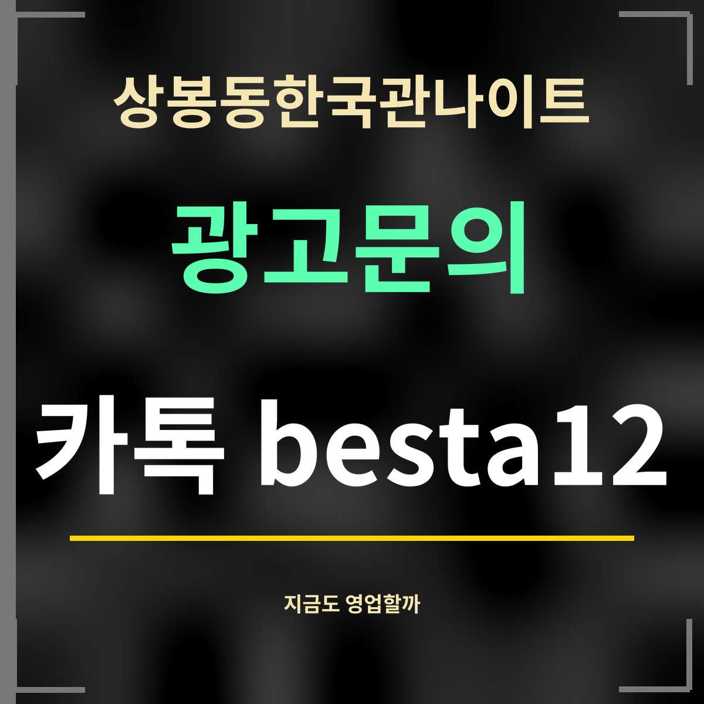

19세 미만 출입 금지
상봉동한국관나이트 지금도 영업 중일까, 최근 기록 정리
제휴 없는 정보 안내 · 카카오맵 장소 정보(2026년 9월 27일 확인)에 나온 표시와 날짜만 옮겼습니다. 후기 글의 내용은 옮기지 않았습니다.

요약: 카카오맵은 상봉동한국관나이트(한국관나이트)를 영업 중인 장소로 표시하고, 영업시간을 매일 18:00~06:00으로 올려 두었습니다. 이 장소에 연결된 블로그 기록은 17건이고, 가장 최근 것은 2026-09-13에 올라왔습니다.
날짜로 보는 기록
- 2025-12-12
- 카카오맵 장소 정보가 마지막으로 고쳐진 날
- 2024-09-05
- 카카오맵 메뉴(맥주기본 값)가 마지막으로 고쳐진 날
- 2026-09-01
- 이 장소에 연결된 블로그 기록
- 2026-09-02
- 이 장소에 연결된 블로그 기록
- 2026-09-13
- 이 장소에 연결된 가장 최근 블로그 기록
이 기록으로 알 수 있는 것과 없는 것
카카오맵의 영업 표시와 2026년 9월에 잇따라 올라온 방문 기록은, 상봉동한국관나이트가 최근까지 문을 열어 왔다는 것을 보여 주는 공개 흔적입니다. 가게의 옛 공식 누리집은 기간이 끝나 열리지 않아, 지금은 이런 공개 기록이 확인 수단입니다.
하지만 오늘 문을 여는지, 쉬는 날이 있는지까지 이 기록이 보장하지는 않습니다. 명절이나 가게 사정으로 달라질 수 있으니, 가는 날 지도 앱에서 영업 표시를 한 번 더 확인하세요.
오늘 영업 여부 확인하는 법
지도 앱에서 상봉동한국관나이트(카카오맵 이름 「한국관나이트」)를 찾아 장소 화면의 영업 표시를 보면 그 시각 기준으로 영업 중인지 나옵니다. 명절 연휴처럼 평소와 다를 수 있는 날에는 출발 직전에 한 번 더 보세요.
자주 묻는 것
상봉동한국관나이트는 지금도 영업하나요?
카카오맵에는 영업 중인 장소로 표시되어 있고, 2026년 9월에도 방문 기록이 올라왔습니다. 가는 날 한 번 더 확인하세요.
영업시간은요?
카카오맵 기준 매일 18:00부터 다음 날 06:00까지입니다.
공식 누리집은 없나요?
옛 공식 누리집은 호스팅 기간이 만료되어 열리지 않습니다.
한 줄 정리: 상봉동한국관나이트는 카카오맵에 영업 중으로 나오고, 2026년 9월에도 방문 기록이 이어졌습니다.
영업시간과 붐비는 시각은 몇 시에 붐빌까를 보세요.